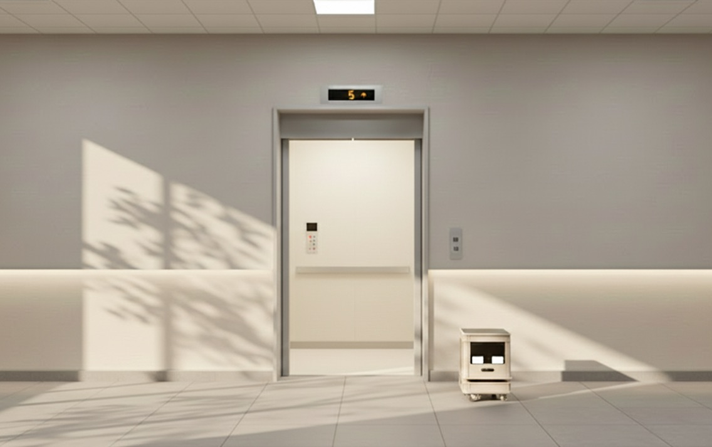
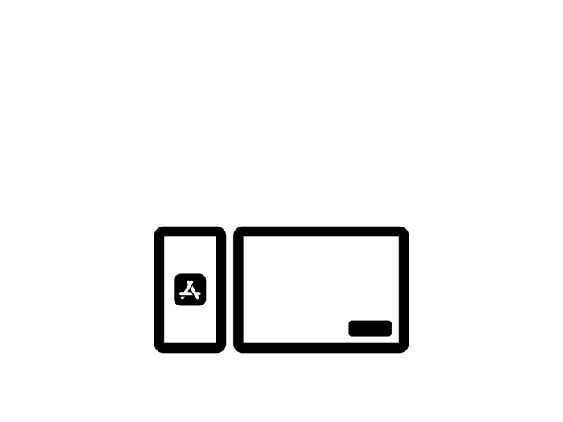
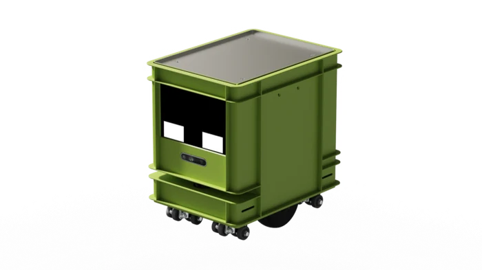
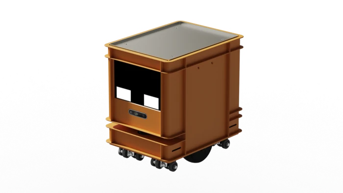
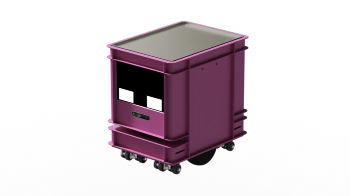
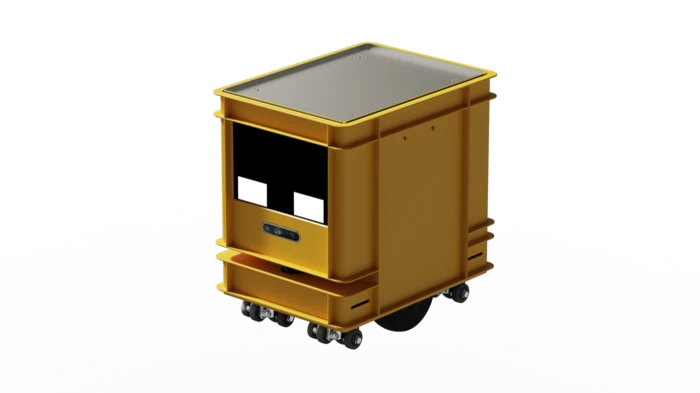
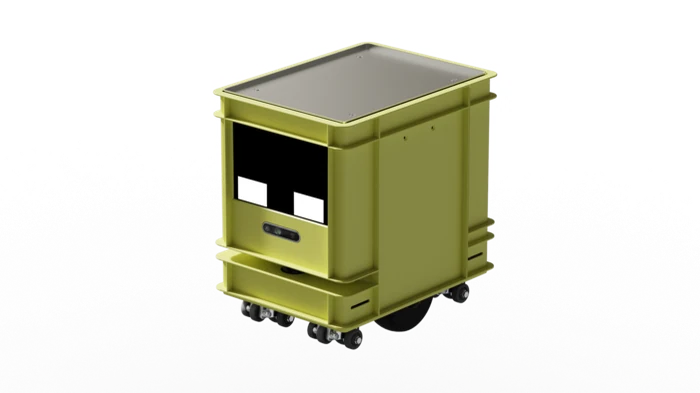
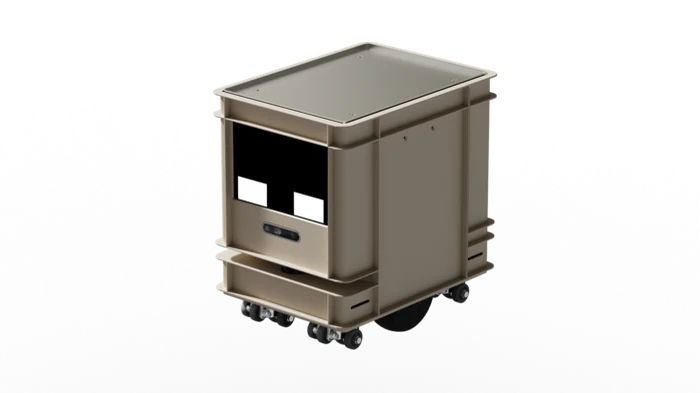
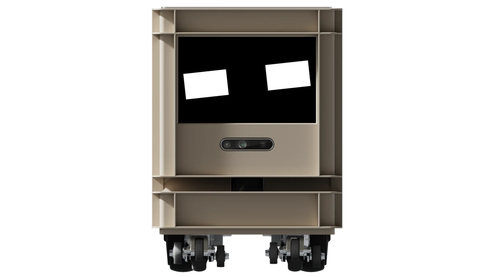
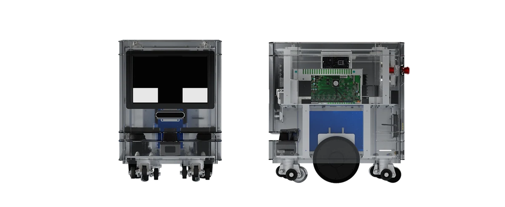

컴팩트, 그러나 넉넉하게
딜리버리 로봇
STORAGY
STORAGY #1
엘리베이터를 타고 수직이동
딜리버리 로봇 '스토리지'
스토리지는 X, Y축을 넘어 Z축으로 움직입니다. 엘레베이터를 호출해 스스로 타고 내리며, 어느 층에서나 앱으로 주문한 고객에게 직접 물품을 배달합니다.


자체 개발 웹
직관적인 UI/UX를 개발해 적용한 웹으로 쉽고 빠른 주문 여정을 완성합니다.
자동 무선 충전 시스템
배터리가 부족하면 무선 충전 시스템을 찾아 자동으로 충전합니다.
어디든 자유로운 이동
엘리베이터 턱도 걱정없는 등반 기능으로 건물을 자유롭게 이동합니다.
STORAGY #2
필요에 맞춰 유연하게 확장,
모듈 시스템
박스 하나만 더 쌓으면, 추가 공간 완성. 유로 박스 표준 사이즈로 기존 제품과의 호환도 손쉽게, 모듈 시스템으로 필요에 맞게 자유로운 확장이 가능합니다. 다양한 컬러 배리에이션으로 어느 공간에서나 매력적인 디자인까지.






사용자와 소통하는
감정형 디스플레이 인터페이스
단순한 화면이 아닌, 표정으로 반응하는 디스플레이를 통해 사용자는 로봇과 자연스럽게 상호작용할 수 있습니다.

최첨단 로봇 지능 모델
BRAIN X™ 탑재
STORAGY #3
어떤 기기든
완벽 호환
배송이 필요한 곳이라면 어디든 호환할 수 있는 협업.
STORAGY #4
기존 로봇과 차별화된
초소형 사이즈
타사 대비 절반 이상 가벼운 25kg 내외의 컴팩트한 스펙, 50kg 까지 문제 없는 넉넉한 적재중량, 차별화된 초소형 사이즈로 어떤 공간에서도 유연하게 활용할 수 있습니다.

로봇 사양
| Model | STORAGY 2.0 |
|---|---|
| Size | 400 X 430 X 306 |
| Weight | 20kg |
| Battery | 7S5P 25.41V 25Ah |
| Maximum Speed | 1.0m/s |
| Payload Capacity | 50kg |
| Elevator Compatibility | 지원 |
| Modular Expansion | 지원 |